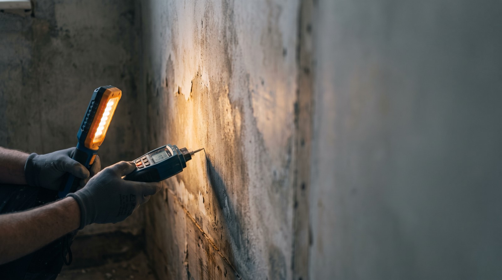

Water · Fire · Mould · 24/7
Emergency water, fire and mould restoration. Most of our calls come from plumbers, property managers and insurance agents who have watched us work, which is a harder reputation to buy than advertising.

Services
Every hour water sits, the damage and the cost compound. This is why we answer at 3am.
Truck-mounted extraction, commercial air movers and moisture mapping so we can prove the structure is genuinely dry, not just dry-feeling.
Soot removal, odour neutralisation and contents cleaning. Smoke damage travels far further than the fire itself.
Containment, HEPA filtration and post-remediation verification by an independent hygienist so the clearance means something.
Board-up, tarping and full structural drying. We mobilise extra crews before a forecast storm rather than after it.
Results
Process
You are dealing with a disaster and an insurer at the same time. We take the second one off you.
A person answers day or night, whether you are the homeowner, the plumber already on site, or the agent who sent us.
Stop the source, extract standing water, tarp or board up. The first hours decide the size of the claim.
Full photographic scope and moisture log, submitted to your carrier. We bill them direct and meet the adjuster on site.
Daily readings until independently verified dry, then reconstruction, with the log handed to whoever referred you as well as to you.
Do not wait for business hours. Every hour standing water sits, the cost and the damage climb. Crews are on call this minute.
We work with all major insurers and bill direct. Free emergency assessment.